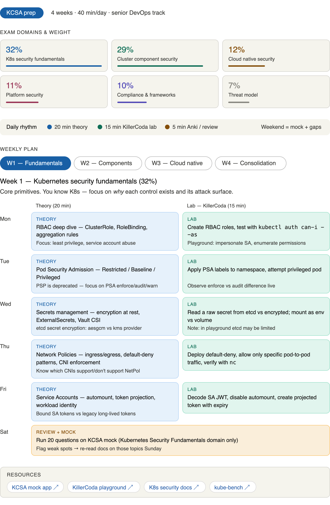
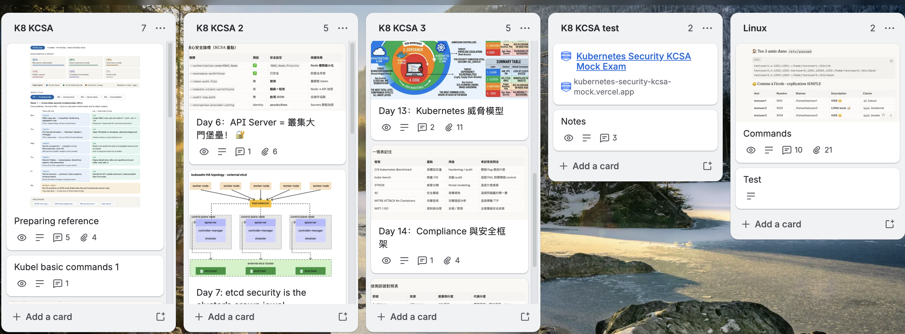
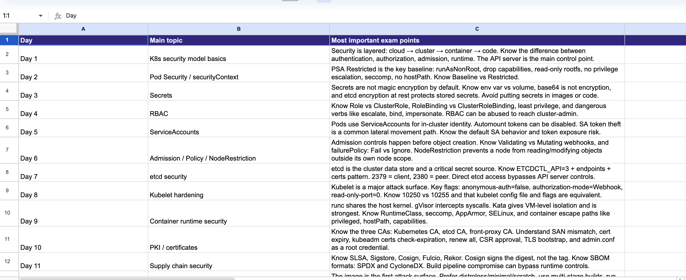
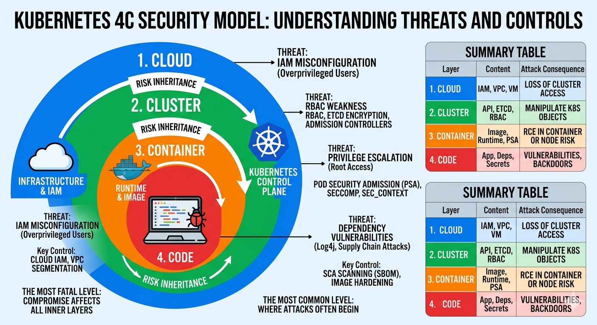
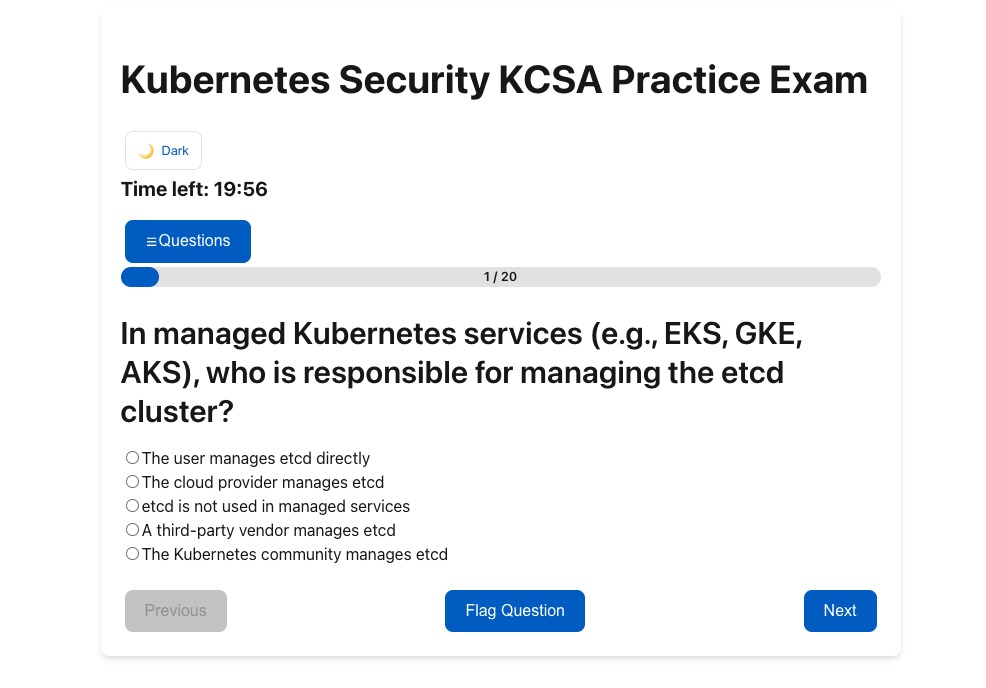
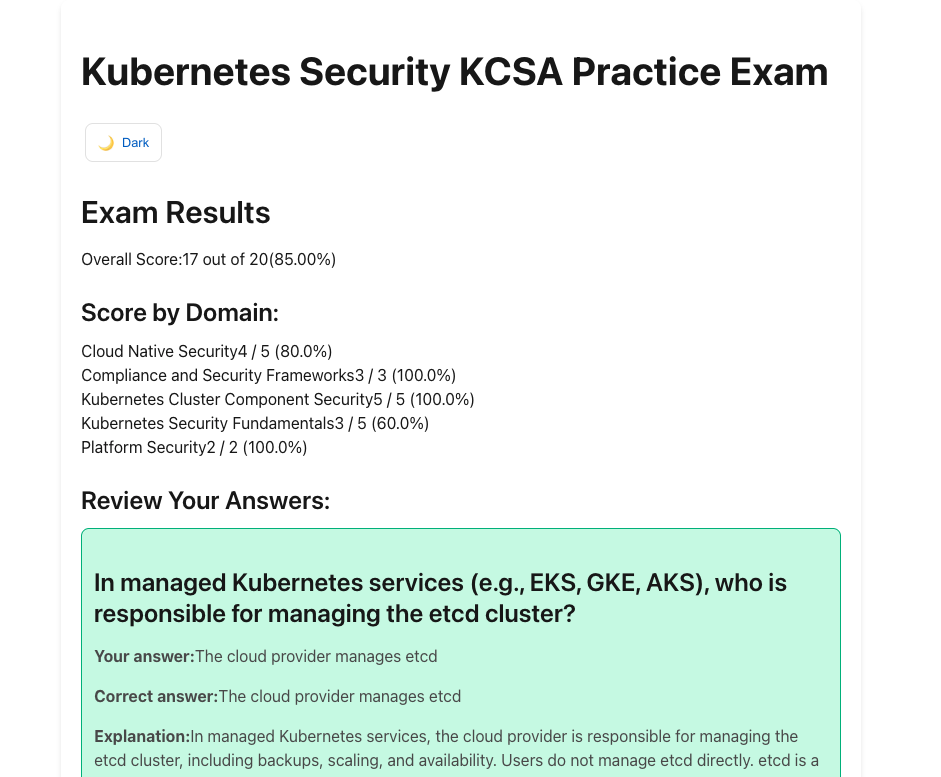

KCSA en 16 jours : comment j'ai structuré mon apprentissage de la sécurité Kubernetes, en mode Tech Lead DevOps
12 Juin 2026, 18:00 CEST
DevOpsRetour d'expérience sur ma préparation à la certification KCSA (Kubernetes and Cloud Native Security Associate) — méthode, outils gratuits et architecture "zero trust"
Pourquoi se lancer dans la KCSA quand on est déjà Tech Lead DevOps ?

Après 17 ans dans l'IT — entre développement full-stack, plateforme et DevOps — j'ai passé ces derniers mois à industrialiser des clusters Kubernetes en environnement de santé (HDS, ISO 27001), avec ArgoCD, Helm, Vault et Harbor au quotidien. Mais opérer un cluster en production et auditer sa sécurité avec un référentiel structuré, ce sont deux compétences différentes. La certification KCSA (Kubernetes and Cloud Native Security Associate) m'a semblé être le bon cadre pour transformer mon expérience opérationnelle en grille de lecture transversale : RBAC, etcd, kubelet, supply chain, modèles de menaces, conformité.
Ma motivation est simple : dans un monde où la sécurité n'est plus une option mais une exigence contractuelle (clients santé, audits, appels d'offres), je veux pouvoir concevoir une architecture Kubernetes en partant du principe "zero trust" — c'est-à-dire ne jamais faire confiance par défaut, à aucun composant, aucun pod, aucun token, et durcir chaque couche du modèle 4C (Cloud, Cluster, Container, Code) de manière systématique plutôt qu'au cas par cas.
Mon terrain de jeu réel : l'automatisation maximale avec K8s
Mon parcours professionnel récent a été très pratique : déploiement d'une plateforme Kubernetes multi-labs (28+ laboratoires médicaux, SLA 99,95 %), pipelines GitOps avec ArgoCD, gestion des secrets via ExternalSecrets et Vault, et un travail récent de pivot architectural pour un produit utilisant un MVP basé sur LCM avec une API Partner en microservice sur AWS.
Pourquoi Kubernetes est-il si utile pour l'automatisation maximale dans ce type de contexte ? Trois raisons concrètes que j'ai vérifiées sur le terrain :
- Déclaratif et idempotent — un
kubectl apply -fou un sync ArgoCD reproduit l'état exact souhaité, sans script impératif fragile. - Auto-réparation native — les contrôleurs (Deployment, ReplicaSet) maintiennent l'état désiré en continu, ce qui réduit drastiquement les interventions manuelles d'astreinte.
- Surface de sécurité unifiée — RBAC, NetworkPolicy, PSA et l'admission control donnent un seul point de contrôle pour appliquer une politique de sécurité cohérente sur des dizaines de microservices, plutôt que de sécuriser chaque VM individuellement.
C'est précisément cette unification qui m'a poussé à vouloir structurer mes connaissances de sécurité de façon tout aussi systématique que mon infrastructure.
La méthode : un plan de 16 jours généré avec Claude (Anthropic)

Plutôt que de foncer directement sur les questions du mock exam, j'ai demandé à Claude de me construire un plan d'apprentissage progressif, calibré pour mon niveau (senior DevOps) et mon temps disponible (40 minutes/jour). Le résultat : un plan sur 4 semaines, avec un rythme quotidien fixe et une progression par domaine d'examen pondérée selon le poids réel de chaque thème.
Le rythme quotidien retenu :
- 20 minutes de théorie — un point précis, calibré "senior", sans rappel des bases déjà connues.
- 15 minutes de lab pratique sur KillerCoda — des commandes prêtes à copier-coller pour manipuler un vrai cluster.
- 5 minutes de flashcards Anki — génération automatique de cartes Q/R pour la répétition espacée.
- Le week-end — mock exam filtré par domaine, puis correction ciblée des erreurs.
Sur 16 jours, j'ai ainsi couvert dans l'ordre : RBAC, Pod Security Admission, gestion des secrets, NetworkPolicy, ServiceAccounts et tokens, durcissement de l'API server, sécurité d'etcd, durcissement du kubelet, sécurité du runtime conteneur (runc / gVisor / Kata), PKI et cycle de vie des certificats, sécurité de la supply chain (SLSA, Cosign, SBOM), durcissement des images, modélisation des menaces (4C + STRIDE), frameworks de conformité (CIS, NSA/CISA, NIST 800-190) et enfin la réponse à incident.
Le point le plus utile de cette méthode : chaque session théorique se termine par une liste de "pièges d'examen" — les confusions classiques (par exemple : cordon ne vide pas un nœud, seul un taint NoExecute le fait) — qui sont exactement le type de question piège posée à l'examen KCSA.
Trello : organiser la mémorisation par "carte de jour"

Pour renforcer la mémorisation, j'ai créé un tableau Trello avec une carte par jour de programme (K8 KCSA 2, K8 KCSA 3, etc.), chacune contenant un résumé visuel des points clés du jour : tableau des flags critiques de l'API server, schéma de topologie etcd externe en HA, ou encore comparaison Dockerfile vulnérable vs multi-stage sécurisé.
L'avantage de Trello ici : chaque carte devient une fiche de révision visuelle autonome, que je peux parcourir en quelques minutes le matin avant de commencer le jour suivant — une forme de "rappel actif" qui complète très bien les flashcards Anki générées par Claude.
Le mock exam gratuit + Google Sheets pour traquer mes erreurs

Pour m'entraîner aux questions type examen, j'ai utilisé le simulateur gratuit et open source kubernetes-security-kcsa-mock.vercel.app — plus de 290 questions, filtrables par domaine, avec explications détaillées et score par domaine.
Mais l'outil seul ne suffit pas si on ne garde pas de trace de ses erreurs. J'ai donc créé une feuille Google Sheets dans laquelle je consigne systématiquement :
- la question exacte qui m'a posé problème,
- ma réponse erronée vs la bonne réponse,
- une reformulation "piège vs idée correcte" pour graver la nuance,
- et un tableau récapitulatif par jour avec les mots-clés d'examen associés.
👉 Voir ma feuille de suivi KCSA (Google Sheets)
Ce système "mock → erreur → reformulation → relecture" est, à mon sens, le levier le plus efficace de toute la préparation : on arrête de réviser ce qu'on sait déjà, et on concentre 100 % du temps sur les zones de friction réelles.
Visualiser le modèle 4C avec l'IA générative (Gemini)

Le modèle 4C (Cloud → Cluster → Container → Code) est la colonne vertébrale conceptuelle de toute la KCSA : chaque couche hérite des faiblesses de la couche qui l'englobe. Pour me l'ancrer visuellement, j'ai demandé à Gemini (Google AI) de générer une infographie reprenant les quatre couches, les menaces associées et les contrôles clés à chaque niveau.
Ce type de visuel est particulièrement efficace pour retenir la logique de "risk inheritance" : une faiblesse au niveau Cloud (IAM mal configuré) ne peut jamais être corrigée par un contrôle au niveau Cluster (RBAC) — il faut intervenir à la bonne couche. À l'inverse, une attaque qui démarre au niveau Code (dépendance vulnérable) peut être détectée par des contrôles au niveau Cluster (Falco, audit logs), même si elle ne peut pas y être empêchée.
Bilan : ce que cette méthode m'a apporté


Au-delà de la certification elle-même, ce sprint de 16 jours m'a surtout permis de relier ma pratique quotidienne à un référentiel structuré : je sais désormais expliquer pourquoi je configure tel flag kubelet, à quelle couche du 4C il correspond, et quelle catégorie STRIDE il mitige — un langage commun extrêmement utile en entretien technique comme en revue d'architecture.
La combinaison Claude (plan + théorie + labs + flashcards) + KillerCoda (pratique réelle) + mock exam gratuit + Google Sheets (traçabilité) + Trello (mémorisation visuelle) + Gemini (schémas) forme un kit 100 % gratuit, reproductible, et adaptable à n'importe quelle certification technique — pas seulement la KCSA. Et comme je suis aussi plutôt radin, cela m'a permis de préparer cet examen sans trop dépenser, tout en arrivant sereinement le jour J, bien préparé et l'esprit tranquille.
Références
- KCSA Mock Exam Simulator (gratuit, open source)
- KillerCoda — Playground Kubernetes gratuit
- Ma feuille de suivi des erreurs KCSA (Google Sheets)
- Code source du simulateur KCSA (GitHub)
- Linux Foundation — Page officielle KCSA
- Documentation officielle Kubernetes — Sécurité
- kube-bench — Audit CIS Benchmark